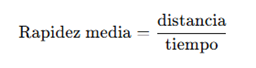
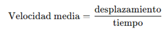

La rapidez media se define como distancia total dividida por el tiempo total:

Magnitud escalar.
La velocidad media es el desplazamiento dividido por el tiempo total:

La velocidad instantánea es la que se mide en un instante concreto, como la que muestra un velocímetro.Imagen:
Un velocímetro de auto y una brújula juntos, para ilustrar número y dirección.